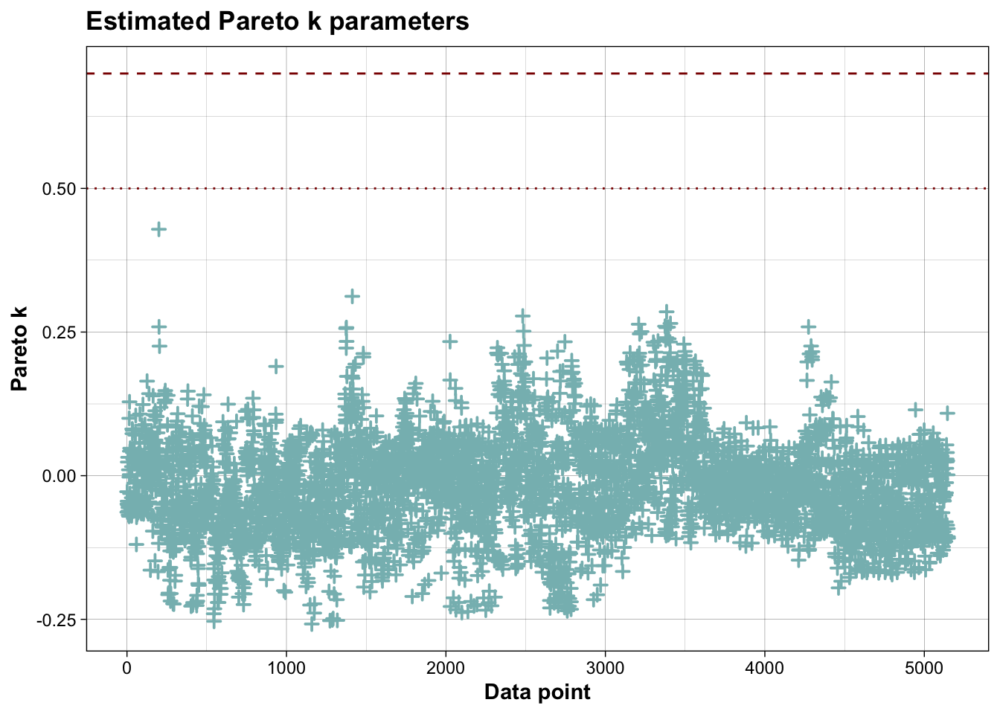
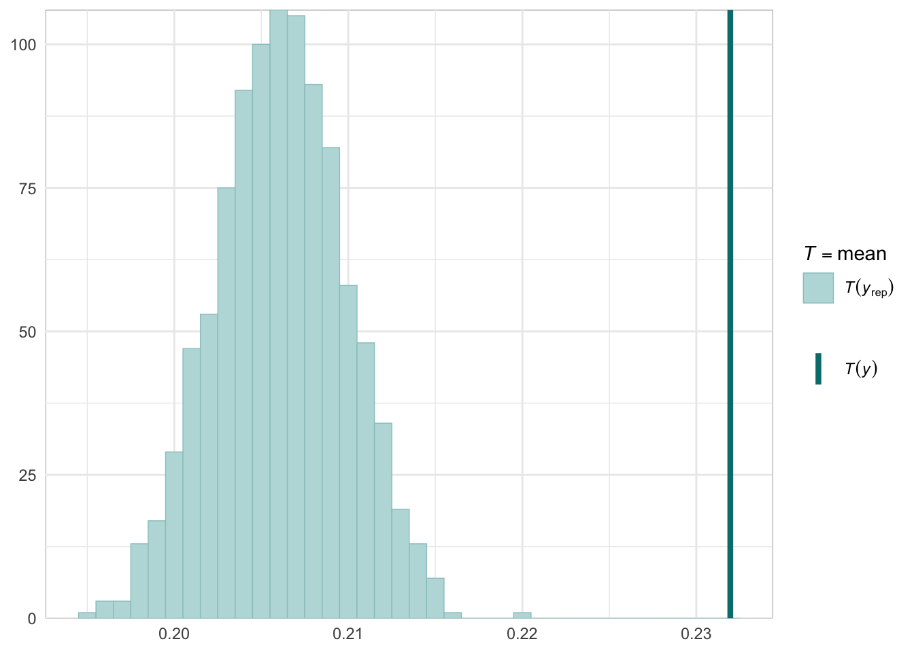
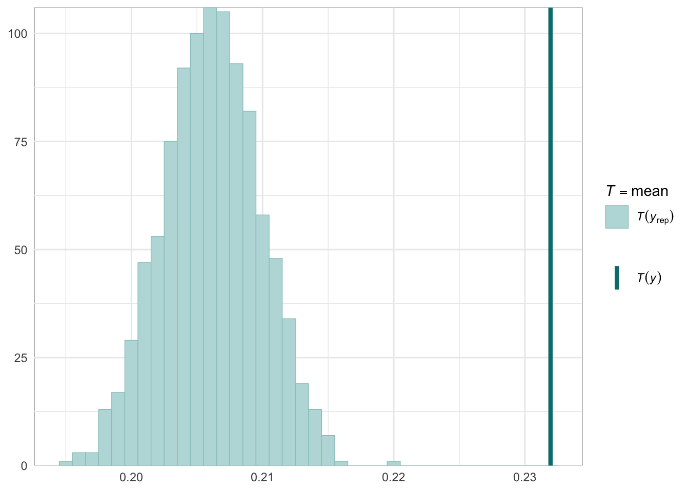

Convergent Validity
Brief Description
Below we provide information on the specifications of the Bayesian random-effects meta-analysis and meta-regressions, as well as an overview of the model summaries, including posterior predictive checks (PPCs), approximate leave-one-out (LOO) cross-validation output, and convergence diagnostics (i.e., Rhat values, trace plots, effective sample size).
To replicate these analyses, refer to the Workflow page
Bayesian random-effects meta-analysis and meta-regressions
Intercept-Only
Model specification in brms
family <- brmsfamily(
family = "student",
link = "identity"
)
formula <- bf(wcor_z|se(sei_z, sigma = TRUE) ~ 0 + Intercept + (1|sample),
sigma ~ 0 + Intercept + (1 | sample))
priors <- c(prior(normal(0, 1), class = "b", coef = "Intercept"),
prior(normal(0, 2), class = "b", dpar = "sigma", coef = "Intercept"),
prior(cauchy(0, 0.3), class = "sd"),
prior(cauchy(0, 0.3), class = "sd", dpar = "sigma"))Model Summary
## Family: student
## Links: mu = identity; sigma = log; nu = identity
## Formula: wcor_z | se(sei_z, sigma = TRUE) ~ 0 + Intercept + (1 | sample)
## sigma ~ 0 + Intercept + (1 | sample)
## Data: dt_ma (Number of observations: 5149)
## Draws: 2 chains, each with iter = 7000; warmup = 2000; thin = 1;
## total post-warmup draws = 10000
##
## Multilevel Hyperparameters:
## ~sample (Number of levels: 49)
## Estimate Est.Error l-95% CI u-95% CI Rhat Bulk_ESS Tail_ESS
## sd(Intercept) 0.08 0.01 0.06 0.11 1.00 1447 2764
## sd(sigma_Intercept) 0.49 0.07 0.37 0.64 1.00 1612 3102
##
## Regression Coefficients:
## Estimate Est.Error l-95% CI u-95% CI Rhat Bulk_ESS Tail_ESS
## Intercept 0.17 0.01 0.14 0.20 1.00 867 1733
## sigma_Intercept -1.91 0.08 -2.06 -1.76 1.00 1142 2531
##
## Further Distributional Parameters:
## Estimate Est.Error l-95% CI u-95% CI Rhat Bulk_ESS Tail_ESS
## nu 3.21 0.17 2.88 3.56 1.00 6915 6636
##
## Draws were sampled using sample(hmc). For each parameter, Bulk_ESS
## and Tail_ESS are effective sample size measures, and Rhat is the potential
## scale reduction factor on split chains (at convergence, Rhat = 1).MCMC diagnostics


PPCs & LOO
Graphical posterior predictive checks


##
## Computed from 10000 by 5149 log-likelihood matrix.
##
## Estimate SE
## elpd_loo 291.8 83.5
## p_loo 101.8 3.0
## looic -583.7 167.1
## ------
## MCSE of elpd_loo is 0.1.
## MCSE and ESS estimates assume MCMC draws (r_eff in [0.6, 2.3]).
##
## All Pareto k estimates are good (k < 0.7).
## See help('pareto-k-diagnostic') for details.

Measure-Pair as Covariate
Model specification in brms
family <- brmsfamily(
family = "student",
link = "identity"
)
formula <- bf(wcor_z|se(sei_z, sigma = TRUE) ~ 0 + meas_pair_id + (1|sample),
sigma ~ 0 + meas_pair_id + (1|sample))
priors <- c(prior(normal(0, 1), class = "b"),
prior(normal(0, 2), class = "b", dpar = "sigma"),
prior(cauchy(0, 0.3), class = "sd"),
prior(cauchy(0, 0.3), class = "sd", dpar = "sigma"))Model Summary
## Family: student
## Links: mu = identity; sigma = log; nu = identity
## Formula: wcor_z | se(sei_z, sigma = TRUE) ~ 0 + meas_pair_id + (1 | sample)
## sigma ~ 0 + meas_pair_id + (1 | sample)
## Data: dt_ma (Number of observations: 5149)
## Draws: 2 chains, each with iter = 7000; warmup = 2000; thin = 1;
## total post-warmup draws = 10000
##
## Multilevel Hyperparameters:
## ~sample (Number of levels: 49)
## Estimate Est.Error l-95% CI u-95% CI Rhat Bulk_ESS Tail_ESS
## sd(Intercept) 0.05 0.01 0.04 0.06 1.00 2523 4050
## sd(sigma_Intercept) 0.41 0.06 0.31 0.53 1.00 2496 4495
##
## Regression Coefficients:
## Estimate Est.Error l-95% CI u-95% CI Rhat Bulk_ESS Tail_ESS
## meas_pair_id1 0.21 0.02 0.17 0.25 1.00 6247 7102
## meas_pair_id2 0.02 0.01 0.00 0.03 1.00 992 1942
## meas_pair_id3 0.21 0.01 0.19 0.24 1.00 1810 4244
## meas_pair_id4 0.15 0.01 0.13 0.16 1.00 1163 2508
## meas_pair_id5 0.06 0.01 0.04 0.07 1.00 910 1840
## meas_pair_id6 0.44 0.01 0.42 0.46 1.00 1290 3021
## sigma_meas_pair_id1 -1.72 0.12 -1.96 -1.49 1.00 3145 5028
## sigma_meas_pair_id2 -3.88 0.20 -4.32 -3.52 1.00 5609 5471
## sigma_meas_pair_id3 -1.46 0.07 -1.60 -1.31 1.00 1524 3363
## sigma_meas_pair_id4 -2.82 0.10 -3.02 -2.63 1.00 2191 4267
## sigma_meas_pair_id5 -3.02 0.08 -3.17 -2.86 1.00 1542 3302
## sigma_meas_pair_id6 -1.65 0.08 -1.81 -1.50 1.00 1448 2703
##
## Further Distributional Parameters:
## Estimate Est.Error l-95% CI u-95% CI Rhat Bulk_ESS Tail_ESS
## nu 4.95 0.36 4.30 5.69 1.00 10305 8045
##
## Draws were sampled using sample(hmc). For each parameter, Bulk_ESS
## and Tail_ESS are effective sample size measures, and Rhat is the potential
## scale reduction factor on split chains (at convergence, Rhat = 1).MCMC diagnostics


PPCs & LOO
Graphical posterior predictive checks


##
## Computed from 10000 by 5149 log-likelihood matrix.
##
## Estimate SE
## elpd_loo 2166.5 83.5
## p_loo 92.4 2.8
## looic -4333.0 166.9
## ------
## MCSE of elpd_loo is 0.1.
## MCSE and ESS estimates assume MCMC draws (r_eff in [0.6, 2.3]).
##
## All Pareto k estimates are good (k < 0.7).
## See help('pareto-k-diagnostic') for details.
Domain-Pair as Covariate
Model specification in brms
family <- brmsfamily(
family = "student",
link = "identity")
formula <- bf(wcor_z|se(sei_z, sigma = TRUE) ~ 0 + name_pair_id + (1|sample),
sigma ~ 0 + name_pair_id + (1|sample))
priors <- c(prior(normal(0, 1), class = "b"),
prior(normal(0, 2), class = "b", dpar = "sigma"),
prior(cauchy(0, 0.3), class = "sd"),
prior(cauchy(0, 0.3), class = "sd", dpar = "sigma"))Model Summary
## Family: student
## Links: mu = identity; sigma = log; nu = identity
## Formula: wcor_z | se(sei_z, sigma = TRUE) ~ 0 + domain_pair_id + (1 | sample)
## sigma ~ 0 + domain_pair_id + (1 | sample)
## Data: dt_ma (Number of observations: 5149)
## Draws: 2 chains, each with iter = 7000; warmup = 2000; thin = 1;
## total post-warmup draws = 10000
##
## Multilevel Hyperparameters:
## ~sample (Number of levels: 49)
## Estimate Est.Error l-95% CI u-95% CI Rhat Bulk_ESS Tail_ESS
## sd(Intercept) 0.04 0.01 0.03 0.06 1.00 2056 3444
## sd(sigma_Intercept) 4.13 0.47 3.34 5.17 1.00 400 1057
##
## Regression Coefficients:
## Estimate Est.Error l-95% CI u-95% CI Rhat Bulk_ESS Tail_ESS
## domain_pair_id1 0.25 0.02 0.21 0.28 1.00 1850 3607
## domain_pair_id10 0.01 0.02 -0.03 0.05 1.00 1674 5089
## domain_pair_id100 0.10 0.02 0.06 0.14 1.00 1725 5680
## domain_pair_id101 0.15 0.03 0.09 0.22 1.00 5833 6346
## domain_pair_id102 0.05 0.02 0.01 0.08 1.00 1605 4173
## domain_pair_id103 0.05 0.02 -0.00 0.10 1.00 3493 5061
## domain_pair_id104 0.03 0.03 -0.03 0.08 1.00 2785 5439
## domain_pair_id105 0.04 0.02 -0.01 0.09 1.00 3133 5014
## domain_pair_id106 -0.00 0.03 -0.06 0.06 1.00 3818 5682
## domain_pair_id107 0.43 0.02 0.39 0.47 1.00 2270 4903
## domain_pair_id108 0.01 0.02 -0.03 0.05 1.00 2194 4332
## domain_pair_id109 0.04 0.02 -0.00 0.08 1.00 1835 4304
## domain_pair_id11 0.02 0.02 -0.02 0.05 1.00 1168 3302
## domain_pair_id110 0.04 0.02 0.00 0.09 1.00 2357 5272
## domain_pair_id111 -0.05 0.02 -0.09 -0.01 1.00 2280 4191
## domain_pair_id112 -0.03 0.02 -0.06 0.01 1.00 1669 5177
## domain_pair_id113 -0.08 0.02 -0.12 -0.05 1.00 1929 4754
## domain_pair_id114 0.24 0.06 0.11 0.36 1.00 4730 3726
## domain_pair_id115 0.15 0.04 0.07 0.23 1.00 6856 5820
## domain_pair_id116 0.20 0.05 0.10 0.29 1.00 3845 4191
## domain_pair_id117 0.07 0.02 0.02 0.11 1.00 2192 4274
## domain_pair_id118 0.24 0.02 0.19 0.28 1.00 2320 5333
## domain_pair_id119 0.04 0.02 -0.00 0.08 1.00 2395 4991
## domain_pair_id12 -0.00 0.04 -0.10 0.07 1.00 8589 7332
## domain_pair_id120 0.18 0.02 0.14 0.22 1.00 1871 5708
## domain_pair_id121 0.10 0.01 0.08 0.13 1.00 844 2275
## domain_pair_id122 0.03 0.02 -0.01 0.07 1.00 1396 4353
## domain_pair_id123 0.10 0.02 0.06 0.14 1.00 2598 4463
## domain_pair_id124 0.06 0.02 0.01 0.09 1.00 1965 5471
## domain_pair_id125 0.10 0.03 0.04 0.17 1.00 4373 5179
## domain_pair_id126 0.08 0.04 -0.01 0.17 1.00 9722 6341
## domain_pair_id127 0.10 0.04 0.02 0.20 1.00 8371 6249
## domain_pair_id128 0.22 0.02 0.18 0.27 1.00 3097 5914
## domain_pair_id129 0.06 0.02 0.02 0.10 1.00 2378 5469
## domain_pair_id13 0.03 0.02 -0.01 0.06 1.00 999 3059
## domain_pair_id130 0.17 0.03 0.12 0.22 1.00 3513 6229
## domain_pair_id131 0.08 0.02 0.04 0.12 1.00 2494 5448
## domain_pair_id132 0.02 0.02 -0.01 0.07 1.00 1910 4216
## domain_pair_id133 0.11 0.03 0.06 0.16 1.00 3735 5952
## domain_pair_id134 0.12 0.03 0.06 0.18 1.00 3875 5753
## domain_pair_id135 0.10 0.02 0.06 0.15 1.00 2882 5940
## domain_pair_id136 0.23 0.02 0.18 0.28 1.00 4094 5320
## domain_pair_id137 -0.03 0.01 -0.05 -0.02 1.00 442 1079
## domain_pair_id138 -0.01 0.06 -0.13 0.11 1.00 13989 6566
## domain_pair_id139 0.01 0.01 -0.01 0.03 1.00 412 1169
## domain_pair_id14 0.03 0.02 -0.00 0.06 1.00 1053 2615
## domain_pair_id140 0.00 0.01 -0.02 0.02 1.00 441 1025
## domain_pair_id141 -0.03 0.01 -0.05 -0.01 1.00 588 1144
## domain_pair_id142 -0.03 0.01 -0.05 -0.01 1.00 498 1163
## domain_pair_id143 -0.04 0.01 -0.06 -0.02 1.00 476 1032
## domain_pair_id144 -0.06 0.01 -0.08 -0.04 1.00 442 1046
## domain_pair_id145 1.18 0.03 1.13 1.24 1.00 3819 5082
## domain_pair_id146 0.15 0.02 0.10 0.20 1.00 2354 5123
## domain_pair_id147 0.21 0.02 0.17 0.26 1.00 2412 4777
## domain_pair_id148 0.49 0.02 0.46 0.52 1.00 1284 3815
## domain_pair_id149 0.37 0.02 0.33 0.40 1.00 1362 2657
## domain_pair_id15 0.01 0.02 -0.02 0.04 1.00 912 3112
## domain_pair_id150 0.49 0.02 0.46 0.52 1.00 1169 2462
## domain_pair_id151 0.44 0.02 0.41 0.47 1.00 1041 3300
## domain_pair_id152 0.50 0.02 0.47 0.53 1.00 1173 2939
## domain_pair_id153 0.26 0.02 0.22 0.29 1.00 1538 4174
## domain_pair_id154 0.18 0.10 -0.04 0.38 1.00 6955 5160
## domain_pair_id155 0.19 0.03 0.14 0.24 1.00 3151 5074
## domain_pair_id156 0.41 0.04 0.35 0.49 1.00 5944 7054
## domain_pair_id157 0.04 0.03 -0.02 0.09 1.00 4338 7361
## domain_pair_id158 0.20 0.02 0.15 0.25 1.00 2304 4946
## domain_pair_id159 0.26 0.03 0.20 0.33 1.00 5053 6162
## domain_pair_id16 0.04 0.01 0.01 0.06 1.00 865 2878
## domain_pair_id160 0.26 0.03 0.20 0.32 1.00 4378 6134
## domain_pair_id161 0.22 0.05 0.12 0.31 1.00 8376 6476
## domain_pair_id162 0.17 0.04 0.08 0.25 1.00 7692 6311
## domain_pair_id163 0.15 0.02 0.12 0.18 1.00 1137 2558
## domain_pair_id164 0.13 0.02 0.08 0.18 1.00 3129 5526
## domain_pair_id165 0.30 0.02 0.26 0.34 1.00 2340 4298
## domain_pair_id166 0.15 0.02 0.11 0.19 1.00 2637 5166
## domain_pair_id167 0.22 0.02 0.17 0.26 1.00 2392 5778
## domain_pair_id168 0.04 0.02 -0.01 0.07 1.00 1591 3914
## domain_pair_id169 0.64 0.02 0.60 0.69 1.00 2112 5622
## domain_pair_id17 0.09 0.01 0.07 0.11 1.00 724 2138
## domain_pair_id170 0.36 0.02 0.33 0.39 1.00 1306 3539
## domain_pair_id171 0.43 0.02 0.40 0.46 1.00 1198 2987
## domain_pair_id172 0.51 0.01 0.48 0.53 1.00 801 1639
## domain_pair_id173 0.46 0.01 0.43 0.49 1.00 886 2550
## domain_pair_id174 0.36 0.01 0.33 0.39 1.00 948 2409
## domain_pair_id175 0.49 0.08 0.33 0.66 1.00 13795 7044
## domain_pair_id176 0.39 0.02 0.36 0.42 1.00 1556 3841
## domain_pair_id177 0.45 0.02 0.41 0.48 1.00 2033 4622
## domain_pair_id178 0.45 0.02 0.42 0.49 1.00 1393 3445
## domain_pair_id179 0.29 0.02 0.25 0.32 1.00 1140 3223
## domain_pair_id18 0.06 0.02 0.03 0.11 1.00 2477 2861
## domain_pair_id180 0.35 0.03 0.29 0.41 1.00 5434 6077
## domain_pair_id181 0.46 0.02 0.43 0.50 1.00 2047 3605
## domain_pair_id182 0.44 0.02 0.40 0.48 1.00 2315 5023
## domain_pair_id183 0.32 0.02 0.28 0.35 1.00 1607 4294
## domain_pair_id184 0.91 0.04 0.82 0.97 1.00 3784 4766
## domain_pair_id185 0.53 0.02 0.49 0.57 1.00 2025 4548
## domain_pair_id186 0.32 0.01 0.29 0.34 1.00 687 1825
## domain_pair_id187 0.37 0.03 0.32 0.42 1.00 3433 4986
## domain_pair_id188 0.30 0.01 0.28 0.33 1.00 976 2779
## domain_pair_id189 0.52 0.02 0.48 0.56 1.00 1977 4313
## domain_pair_id19 0.07 0.02 0.03 0.10 1.00 1780 4851
## domain_pair_id2 -0.23 0.03 -0.28 -0.17 1.00 3698 5878
## domain_pair_id20 0.08 0.02 0.04 0.10 1.00 1262 3228
## domain_pair_id21 0.04 0.01 0.02 0.07 1.00 791 2680
## domain_pair_id22 -0.13 0.02 -0.16 -0.09 1.00 1728 4580
## domain_pair_id23 -0.04 0.02 -0.07 -0.01 1.00 1513 3453
## domain_pair_id24 0.35 0.08 0.20 0.50 1.00 14401 6775
## domain_pair_id25 0.06 0.02 0.03 0.09 1.00 1070 3090
## domain_pair_id26 0.04 0.03 -0.01 0.10 1.00 3406 4718
## domain_pair_id27 0.03 0.05 -0.09 0.11 1.00 6090 5804
## domain_pair_id28 0.01 0.03 -0.05 0.05 1.00 3530 5319
## domain_pair_id29 0.05 0.04 -0.05 0.11 1.00 5493 6641
## domain_pair_id3 0.07 0.02 0.04 0.11 1.00 1432 3466
## domain_pair_id30 0.05 0.03 0.00 0.10 1.00 3286 5639
## domain_pair_id31 -0.04 0.01 -0.06 -0.02 1.00 442 997
## domain_pair_id32 0.11 0.01 0.09 0.13 1.00 477 862
## domain_pair_id33 0.12 0.03 0.07 0.17 1.00 3705 5449
## domain_pair_id34 0.12 0.02 0.08 0.16 1.00 2393 3281
## domain_pair_id35 0.10 0.01 0.08 0.11 1.00 435 979
## domain_pair_id36 0.16 0.01 0.14 0.18 1.00 565 1847
## domain_pair_id37 0.24 0.01 0.22 0.27 1.00 768 1994
## domain_pair_id38 0.11 0.01 0.09 0.13 1.00 516 1188
## domain_pair_id39 0.11 0.01 0.09 0.13 1.00 429 1150
## domain_pair_id4 0.12 0.02 0.09 0.16 1.00 2560 6241
## domain_pair_id40 0.14 0.01 0.11 0.16 1.00 877 2645
## domain_pair_id41 0.47 0.05 0.37 0.57 1.00 3453 6436
## domain_pair_id42 0.05 0.01 0.02 0.07 1.00 708 1992
## domain_pair_id43 -0.02 0.03 -0.07 0.03 1.00 2671 5419
## domain_pair_id44 0.03 0.03 -0.03 0.08 1.00 4262 6092
## domain_pair_id45 -0.03 0.01 -0.05 -0.01 1.00 698 1524
## domain_pair_id46 0.11 0.01 0.08 0.14 1.00 1291 3000
## domain_pair_id47 0.21 0.04 0.13 0.28 1.00 5927 7819
## domain_pair_id48 0.47 0.01 0.45 0.50 1.00 1319 2974
## domain_pair_id49 0.13 0.01 0.11 0.16 1.00 1197 3218
## domain_pair_id5 -0.00 0.02 -0.05 0.04 1.00 2765 6438
## domain_pair_id50 0.17 0.01 0.15 0.20 1.00 1172 3433
## domain_pair_id51 0.11 0.02 0.08 0.15 1.00 1875 5405
## domain_pair_id52 0.08 0.04 0.01 0.17 1.00 5971 5611
## domain_pair_id53 0.14 0.03 0.09 0.19 1.00 3862 5540
## domain_pair_id54 0.19 0.03 0.14 0.24 1.00 4014 5554
## domain_pair_id55 0.07 0.01 0.05 0.09 1.00 672 1424
## domain_pair_id56 0.07 0.01 0.05 0.09 1.00 641 1871
## [ reached getOption("max.print") -- omitted 236 rows ]
##
## Further Distributional Parameters:
## Estimate Est.Error l-95% CI u-95% CI Rhat Bulk_ESS Tail_ESS
## nu 26.43 7.79 16.01 45.77 1.00 9023 7640
##
## Draws were sampled using sample(hmc). For each parameter, Bulk_ESS
## and Tail_ESS are effective sample size measures, and Rhat is the potential
## scale reduction factor on split chains (at convergence, Rhat = 1).MCMC diagnostics


PPCs & LOO
Graphical posterior predictive checks
 

##
## Computed from 10000 by 5149 log-likelihood matrix.
##
## Estimate SE
## elpd_loo 4478.8 77.4
## p_loo 382.0 11.6
## looic -8957.7 154.7
## ------
## MCSE of elpd_loo is NA.
## MCSE and ESS estimates assume MCMC draws (r_eff in [0.3, 2.4]).
##
## Pareto k diagnostic values:
## Count Pct. Min. ESS
## (-Inf, 0.7] (good) 5139 99.8% 378
## (0.7, 1] (bad) 10 0.2% <NA>
## (1, Inf) (very bad) 0 0.0% <NA>
## See help('pareto-k-diagnostic') for details.

Robustness Check
Behavioural Measure Categorization
We re-conducted the meta-analyses using a data set in which we treated behavioral measures as belonging to a single overarching “financial” domain (versus 4 domains: occupational, investment, gambling, and insurance). The overall estimate (0.17, 95% HDI [0.15,0.20]; k = 4,810) is comparable to the one reported in the main paper. Below are the correlation matrices of the results for this new categorization, as well as an additional figure comparing these re-calculated estimates to those reported in the matrices included the main paper

Attenuation
We corrected the 189 meta-analytic estimates of the intercorrelations reported in the main paper for attenuation due to measurement error by using the MASC reliability parameter estimates and Spearman’s formula.
\[r_{true} = \frac{r_{obs}}{\sqrt{rel_{1}*rel_{2}}}\]
Below are the matrices with the correlations corrected for attenuation (any correlation exceeding |1.00| was capped at |1.00|). We additionally provide a figure below, which contrasts the corrected and uncorrected intercorrelations for each measure pair faceted by category pair.
⚠️ As expected, the results show overall increased correlations between measures. We observe a correlation of rho = 0.95 between the corrected and uncorrected intercorrelations, which indicates that the overall ranking of associations is largely preserved. However, as shown in the figure, the magnitude of the correction is a function of the initial (low) reliability of measures, with those pairs that include measures with low reliability receiving stronger corrections, as it is the case, for example, for behavior-behavior correlations. As a consequence, reporting corrected intercorrelations may “inflate” intercorrelations for some measure categories, introducing a systematic bias and providing an incorrect view of the actual observed intercorrelations between measures. As a result, we opted to report the non-corrected values in the manuscript and provide information about corrections for attenuation in the supplementary materials.⚠️